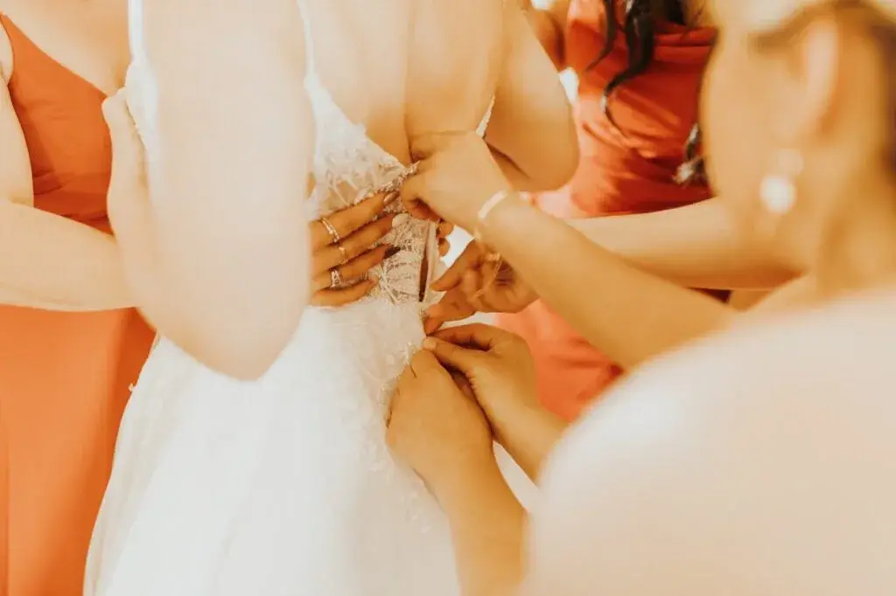
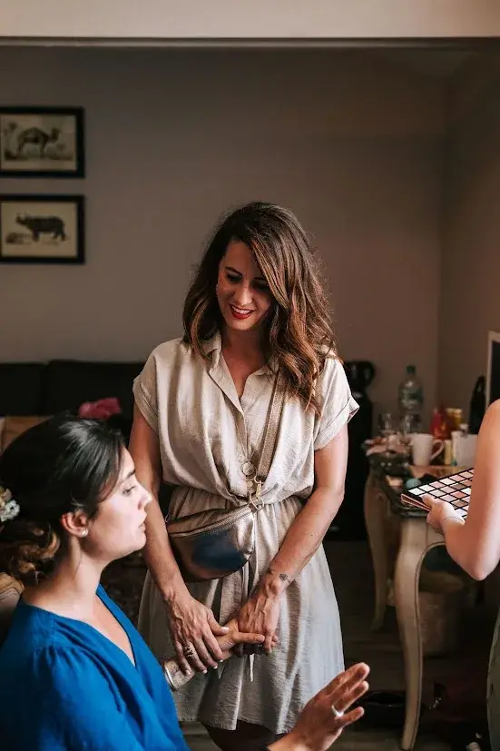
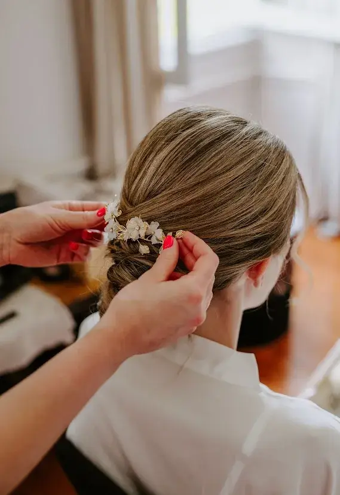
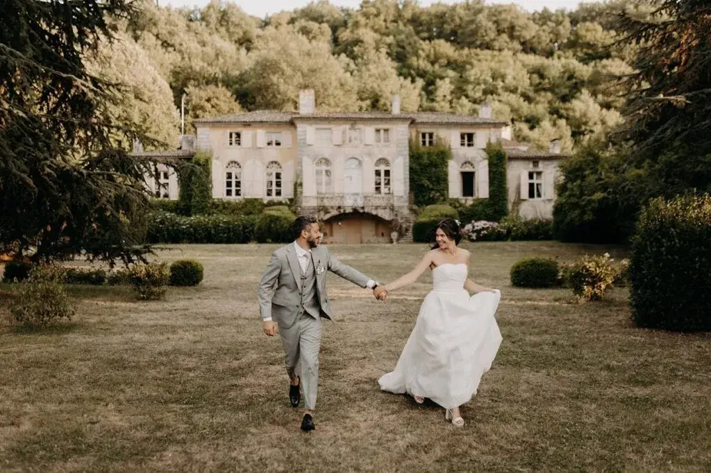
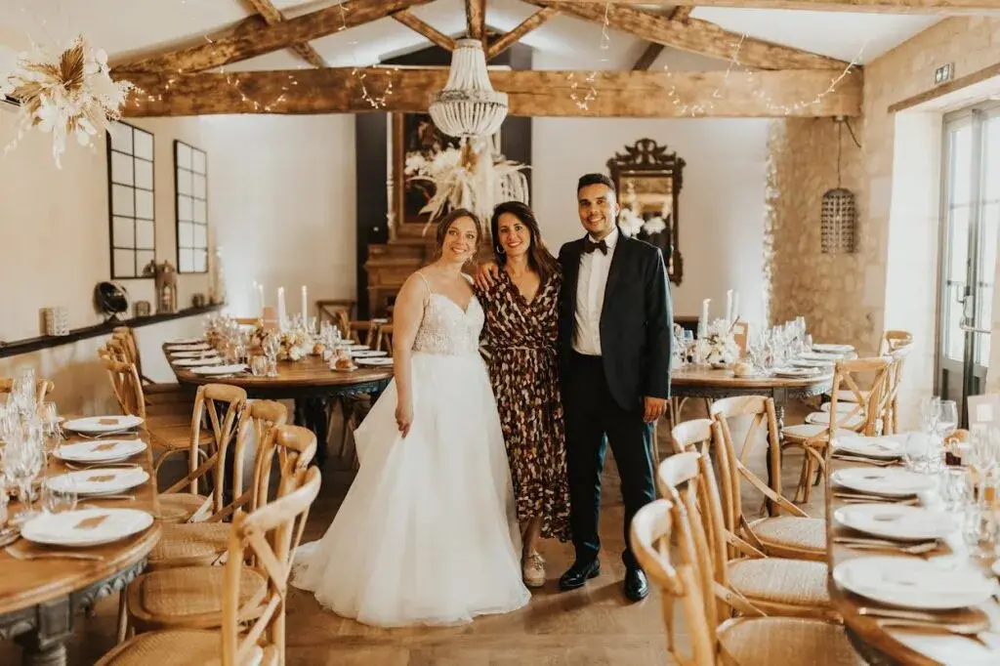

Le jour du mariage, chaque détail compte. On a beau tout préparer des mois à l’avance, prévoir un planning précis, vérifier les prestataires, anticiper la météo… il y a toujours une petite surprise de dernière minute. Et souvent, ce sont des détails minuscules qui peuvent vite devenir stressants : une boutonnière qui se détache au mauvais moment, une fermeture éclair capricieuse, un ourlet qui lâche, une trace de maquillage sur une robe ou encore un invité qui a mal aux pieds avant même l’ouverture de bal.
C’est exactement pour ça qu’un kit de secours bien pensé est un véritable indispensable le jour J. Il ne s’agit pas de prévoir le pire, mais simplement de s’assurer que chaque petit imprévu puisse être réglé rapidement, discrètement, et sans panique. Parce qu’un mariage doit rester un moment de joie, pas une succession de mini-crises à gérer en coulisses.
En tant que wedding planner à Bordeaux et en Nouvelle-Aquitaine, j’ai appris à anticiper toutes les situations possibles pour que rien ne vienne gâcher la journée. Avec l’expérience, j’ai constitué un kit complet que j’emporte systématiquement sur chaque événement, et qui m’a déjà sauvé plus d’une fois (et sauvé aussi quelques mariés !). Dans cet article, je te partage les indispensables que j’ai toujours avec moi, et ce que chaque couple devrait avoir à portée de main pour vivre cette journée sereinement, quoi qu’il arrive.
Pour les tenues et la coiffure
Le jour J, une tenue parfaite peut vite être mise à l’épreuve : un bouton qui lâche, un pli inattendu, une mèche qui s’échappe… Alors mieux vaut avoir de quoi réagir en quelques secondes.
Les épingles, aiguilles et fil sont des indispensables absolus le jour du mariage. Ils permettent de faire face à de nombreux petits imprévus, comme un ourlet qui se défait, un bouton qui saute au dernier moment ou un accessoire qui a besoin d’être sécurisé rapidement. C’est le genre de détail qui peut sembler anodin, mais qui peut vraiment sauver une tenue en quelques minutes.
Un petit fer à repasser ou un défroisseur portable est également très utile, surtout lorsque les vêtements ont été transportés ou rangés pendant plusieurs heures. Même une robe parfaitement repassée peut se froisser en voiture ou en attendant dans une housse. Avec un défroisseur, il devient facile d’éliminer les plis de dernière minute sur une robe, une chemise ou un pantalon, pour un rendu impeccable sur les photos.
Il ne faut pas oublier non plus un peigne, une brosse et de la laque, car les retouches coiffure sont très fréquentes dans la journée. Entre les émotions, les déplacements, le vent ou les câlins des proches, une mèche peut vite se rebeller. Avoir de quoi remettre en place une coiffure rapidement est un vrai confort, autant pour la mariée que pour les demoiselles d’honneur ou même le marié.
Le ruban adhésif double-face fait partie des petites astuces magiques que j’ai toujours dans mon kit. Il est parfait pour maintenir un décolleté en place, fixer une bretelle qui glisse, éviter qu’un tissu ne bouge ou repositionner un accessoire discret. C’est une solution rapide, propre et très efficace pour éviter les accidents vestimentaires.
Enfin, les élastiques et pinces à cheveux sont toujours utiles pour des ajustements express. Ils peuvent servir à refaire une queue de cheval en urgence, maintenir un chignon qui se relâche, ou même attacher temporairement un élément de décoration ou un ruban. Ce sont de petits accessoires simples, mais qui dépannent très souvent pendant un mariage.


Pour les petits accidents et les taches
Pour les petits accidents et les taches, il vaut mieux être prête à tout : un verre renversé, une trace de maquillage ou une ampoule imprévue peuvent arriver très vite, surtout dans l’agitation du jour J.
Les lingettes démaquillantes et les mouchoirs sont essentiels pour essuyer rapidement une tache de maquillage, une larme qui coule ou une petite maladresse avant une photo. C’est simple, mais toujours utile, et ça évite de laisser une trace s’installer.
Les lingettes détachantes sont aussi un indispensable du kit. Elles permettent d’intervenir immédiatement sur une petite tache sur un vêtement, une nappe ou même un élément de décoration. Plus on agit vite, plus on limite les dégâts, et ça peut clairement sauver une tenue ou une table.
Il est également important d’avoir des pansements et du désinfectant à portée de main. Entre les chaussures neuves, les talons, les manipulations de décoration ou les petits accidents, les ampoules et coupures arrivent plus souvent qu’on ne le pense. Avoir de quoi soigner rapidement évite que cela devienne gênant pendant la journée.
Enfin, le coton et les lingettes antiseptiques permettent de nettoyer rapidement une petite zone sans abîmer les tissus, tout en restant hygiénique. C’est parfait pour gérer une petite urgence discrètement, sans interrompre le rythme de la journée.



Pour le confort et l’urgence
Pour rester à l’aise tout au long de la journée, certains petits indispensables peuvent vraiment faire la différence, surtout lors d’un mariage en extérieur ou d’un planning très rythmé.
Un anti-mouches ou un répulsif léger est particulièrement utile pour les cérémonies en plein air. Entre les jardins, les domaines ou les soirées d’été à Bordeaux ou en Nouvelle-Aquitaine, les insectes peuvent vite devenir envahissants et gêner les mariés comme les invités. Avoir de quoi se protéger permet de profiter pleinement du moment, sans être déconcentré.
Une gourde et quelques snacks sont également essentiels pour éviter les coups de fatigue. Le jour J passe à une vitesse folle, et il arrive souvent que les mariés oublient de boire ou de manger. Avoir une gourde à portée de main et quelques encas rapides permet de rester hydraté et de garder de l’énergie tout au long de la journée.
Les mouchoirs parfumés ou un mini-kit de maquillage sont parfaits pour gérer les larmes d’émotion et les petites retouches. Entre les câlins, la chaleur et les moments forts, il est fréquent que le maquillage bouge légèrement. Ces petits accessoires permettent de rester fraîche et impeccable sur les photos, sans avoir besoin de tout refaire.
Enfin, une petite trousse de couture express reste un incontournable. Même si tout a été préparé en amont, une fermeture éclair peut coincer, une bretelle peut lâcher ou un bouton peut se détacher. Avoir de quoi faire une réparation rapide sur place évite de perdre du temps et permet de rester serein face aux imprévus.
Pour la logistique et les imprévus
Pour gérer efficacement la logistique et anticiper les imprévus, certains petits indispensables sont vraiment précieux le jour J.
Le scotch, la colle, les pinces et les ciseaux permettent d’intervenir rapidement sur les décorations, panneaux ou petits éléments qui bougent ou risquent de tomber. Ces outils simples peuvent sauver une mise en scène parfaite et éviter de voir des détails perturbateurs gâcher les photos ou l’ambiance.
Il est également essentiel d’avoir le plan du lieu et les contacts des prestataires toujours accessibles. Que ce soit pour un changement de dernière minute, un retard ou une question pratique, pouvoir joindre rapidement les bonnes personnes permet de rester serein et de gérer les situations sans stress.
Enfin, un chargeur portable pour téléphones et appareils photo est indispensable. Le jour J, chaque moment compte et il serait dommage de manquer une photo, un appel important ou une coordination avec les prestataires à cause d’une batterie vide. Avoir de quoi recharger facilement tous ses appareils garantit que tout se passe sans accroc.
Astuces pour un kit efficace
Pour que votre kit de secours soit vraiment efficace, quelques astuces simples peuvent faire toute la différence.
Il est important de préparer le kit plusieurs jours avant le mariage et de vérifier que tout y est bien complet. Cela permet d’éviter le stress de dernière minute et de s’assurer que chaque imprévu pourra être géré facilement.
Le garder à portée de main dans un sac pratique et léger est également essentiel. L’objectif est de pouvoir intervenir rapidement, sans devoir fouiller dans plusieurs sacs ou courir après un objet oublié.
N’hésitez pas à personnaliser le kit selon vos besoins. Certains incluent même des pansements pour chaussures, des épingles pour nœuds papillon, ou un spray rafraîchissant pour la robe. Chaque détail compte et un kit adapté à votre mariage peut vraiment sauver la journée.
Enfin, impliquer votre wedding planner ou un témoin est une excellente idée. Ils peuvent gérer le kit pour vous, intervenir discrètement en cas de besoin, et vous permettre de rester concentrés sur vos émotions, vos invités et la magie du moment.
Pour les petits accidents et les taches
Un kit de secours n’est pas seulement pratique, c’est un véritable garde-fou contre le stress le jour J. Il vous permet d’anticiper les imprévus, de réagir rapidement et de garder le contrôle face aux petites situations qui peuvent surgir à tout moment. Qu’il s’agisse d’un bouton qui lâche, d’une robe froissée ou d’une trace de maquillage, chaque détail compte, et savoir que l’on a tout prévu procure une sérénité incomparable.
Chaque mariage est unique, mais la tranquillité d’esprit des mariés dépend en grande partie de cette préparation invisible, celle qui se fait dans l’ombre et qui passe souvent inaperçue pour les invités, mais qui garantit que tout se déroule sans accroc. Posséder un kit complet, pensé pour chaque type d’imprévu, permet non seulement de régler rapidement les petits soucis, mais aussi de préserver l’énergie et le sourire des mariés.
En tant que wedding planner à Bordeaux et en Nouvelle-Aquitaine, mon sac est toujours prêt avec tous les indispensables capables de sauver le jour J. Je l’ai constitué après des années d’expérience et de petites catastrophes évitées de justesse : des épingles, un défroisseur, des lingettes, un mini-kit de couture, et bien plus encore. Parce qu’au final, ce sont ces petits détails, parfois invisibles, qui font toute la différence.
Grâce à ce kit, les mariés peuvent profiter pleinement de chaque instant, des préparatifs aux dernières danses, sans stress ni inquiétude, en sachant que quoi qu’il arrive, chaque imprévu a sa solution. C’est un véritable allié pour transformer la journée en un moment parfaitement mémorable.

Vos questions fréquentes
Faut-il un kit différent selon la saison ou le lieu ?
Oui, absolument ! À Bordeaux ou ailleurs en Nouvelle-Aquitaine, un mariage en été nécessitera un anti-mouches, des lingettes rafraîchissantes et beaucoup d’eau, tandis qu’un mariage en hiver pourra inclure des pansements contre les frottements des bottines ou des mini-couvertures pour les invités.
Qui devrait porter le kit pendant la journée ?
Le plus simple est de confier le kit à votre wedding planner, témoin ou une demoiselle d’honneur. Cela vous permet de rester concentrés sur vos émotions et vos invités, tout en sachant que tout imprévu sera géré rapidement.
Peut-on personnaliser le kit pour chaque couple ?
Bien sûr ! Chaque mariage est unique, et certains détails dépendent de vos tenues, de la météo ou du lieu exact à Bordeaux ou en Nouvelle-Aquitaine. Le kit doit toujours être adapté à vos besoins spécifiques : épingles pour nœuds papillon, spray rafraîchissant pour la robe, lingettes détachantes pour la nappe… tout est possible.
En bref...
En résumé, un kit de secours bien préparé est l’un des meilleurs alliés pour vivre son mariage avec sérénité. Ce n’est pas un signe de stress ou de pessimisme, au contraire : c’est une façon simple et intelligente d’anticiper les imprévus qui peuvent arriver à tout moment. Une couture qui lâche, une tache inattendue, une coiffure à ajuster ou un invité qui souffre dans ses chaussures… autant de détails qui peuvent être réglés en quelques minutes quand on a le bon matériel sous la main.
Le jour J passe à une vitesse folle, et l’objectif est de profiter pleinement de chaque instant, sans être interrompus par des petits tracas. Avec un kit complet, discret et adapté à votre mariage, vous vous offrez une vraie tranquillité d’esprit et la garantie de rester concentrés sur l’essentiel : vos émotions, vos proches et la magie de cette journée unique.
Et si vous êtes accompagnés d’une wedding planner ou d’un proche de confiance, c’est encore mieux : pendant que vous vivez votre moment, quelqu’un veille dans l’ombre à ce que tout reste fluide et parfait. Parce qu’au final, ce sont souvent ces petites choses invisibles qui font toute la différence.
Lovely Day Event c'est plusieurs types de prestations
L'organisation de mariage
Je vais intervenir sur toutes les étapes de vos préparatifs et vous guider dans vos choix. Je suis force de proposition pour que votre mariage ne ressemble qu’à vous.
Décoration de mariage
Créative et passionnée, je suis certifiée Wedding Designer et je conçois une ambiance scénographique qui correspond au thème de votre mariage.
Coordination le jour J
Je serai le chef d’orchestre pour gérer les différents prestataires, la mise en place de votre décoration et le déroulement de cette belle journée.